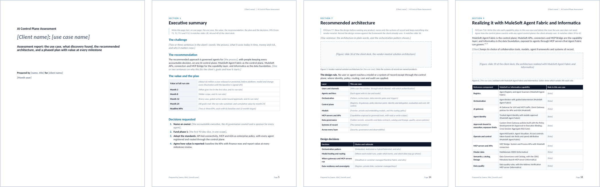

Section 10
Using the client-facing report template
The client-facing report template is the written companion to the readout. It has the same storyline as the client deck, in twelve sections and four appendices, and you copy its structure into your own document for each client. Each section opens with grey guidance to delete and bracketed prompts to replace. The use case 1 answers in Part 3 show what each section should contain.

How the report maps to the templates and the deck
| Report section | What it says | Templates | Deck slides (Part 2) |
|---|---|---|---|
| 1. Executive summary | The use case, the value, the recommendation, the plan and the decisions, on one page | T1, T2, T11, T12 | 28, 46, 48 |
| 2. The use case at a glance | Problem, target state, scope, stages with their work modes, and goals | T1 | 28, 32 |
| 3. What discovery found | Discovery findings and the assets the use case touches | T3 | 30, 31 |
| 4. The value at stake | Value levers with formulas, and KPIs with baselines | T2, T6 | 33 |
| 5. What it must do | The requirements that shape the design | T4 | 34 |
| 6. Security and compliance | Controls by layer, threat coverage, autonomy and takeover by agent, compliance evidence | T5 | 35 |
| 7. Recommended architecture | The vendor-neutral north star for the use case, and the design review | T7 | 36 |
| 8. How it works | A day in the life and how the components work together | T8, T9 | 37, 38 |
| 9. Realizing it with MuleSoft Agent Fabric and Informatica | Each capability and its role, and how it coexists with other agent control planes | T10 | 39–42 |
| 10. The phased plan | Milestones, quick wins, what goes live when, and the operating model | T11, T13 | 43, 44, 47 |
| 11. KPIs, value and ROI |
| T6, T11 | 45, 46 |
| 12. Decisions and next steps | The decisions, the 90-day plan, risks and dependencies, and skills and adoption | T12, T13 | 48 |
| Appendix A. Asset inventory | T3a to T3h in full | T3 | |
| Appendix B. Requirements register | T4 in full | T4 | |
| Appendix C. How the assessment ran | The steps, the workshops and who took part | Section 1 | 29 |
| Appendix D. Sources | The sources cited, numbered as in the handbook | 50–51 |
Filling in the report
- Start a copy for the client. Copy the template’s structure into your own document, then put the client name, the use case and the date on the cover, in the header and in the document properties (title and subject).
- Fill sections 2 to 12 as the assessment runs, from the templates, and the appendices from T3 and T4.
- Replace every bracketed prompt and delete every grey guidance paragraph. Search for “[” before sending.
- Add figures from the client deck. Use pictures of the matching slides from your readout deck, so the report and the readout match.
- Write the executive summary last, on one page.
- List only the sources you cite in Appendix D, with the handbook’s numbers.
Writing guidance
- Lead each section with its message in one sentence, then give the evidence, and let tables and figures carry the detail.
- Use the client’s words for the problem and the goals, and the toolkit’s names for capabilities. Call the control plane MuleSoft Agent Fabric and the capability layer MuleSoft APIs, connectors and MCP Bridge. Informatica is the data foundation, and CloudHub or Runtime Fabric is the runtime.
- Label every figure illustrative until the baseline is measured and finance agrees the method, and show a formula with every value.
- Describe every capability by what it does, from public information, and label custom policies built with the Policy Development Kit as custom.
- Cite research and product facts with superscript numbers from the handbook’s endnote list, and keep the recommendation in your own words.
- Keep each business case on its own: never add up use cases from different businesses.
Quality checklist before sending
- No bracketed prompts or grey guidance left, in the text, the tables, the header or the document properties.
- Every number traces to a template, a baseline or a formula, and illustrative numbers are labeled.
- Every capability is described by what it does, and every custom policy is labeled as custom.
- Every requirement has an owner, a priority, a phase and a KPI.
- Every agent has an owner, a sponsor, a tier and a mode. Each write has a bound approval or a person, and every agent at tier 3 or above has a takeover runbook.
- Every decision has an owner and a date.
- The report and the deck say the same thing: the same numbers, names and dates.
- Every source cited is listed in Appendix D, with the handbook’s number.